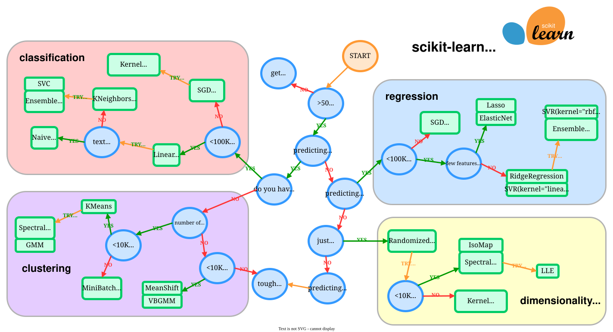
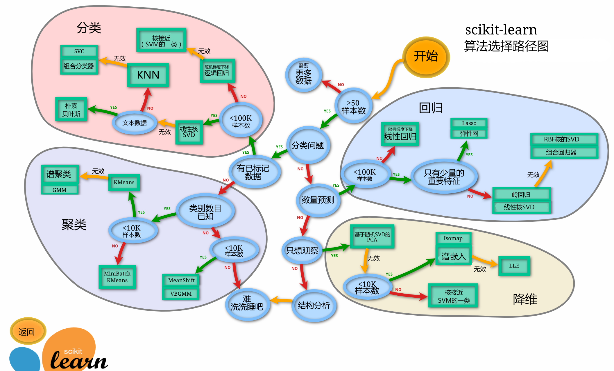

scikit-learn 模型选择图
这张图用于在建模初期根据任务类型、样本量和数据形态，快速收敛到一组候选模型。
英文官方图作为主依据；中文汉化图用于快速阅读和对照。实际建模仍需要结合数据规模、特征类型、评价指标和实验结果选择模型。
英文官方版
来源：scikit-learn：Choosing the right estimator

中文汉化版
来源：CDA：Scikit-Learn 算法选择路径图；中文参考页：sklearn 中文文档：选择正确的估计器

使用提示
- 先判断任务：分类、回归、聚类、降维，还是只想观察数据结构。
- 再看数据条件：是否有标签、样本量大致多少、是否是文本数据。
- 图中给的是候选模型入口，不是最终答案；最终选择仍要通过验证集、交叉验证和业务指标确认。
- 如果候选模型效果不稳定，优先回到数据预处理、特征工程和评价方式检查。